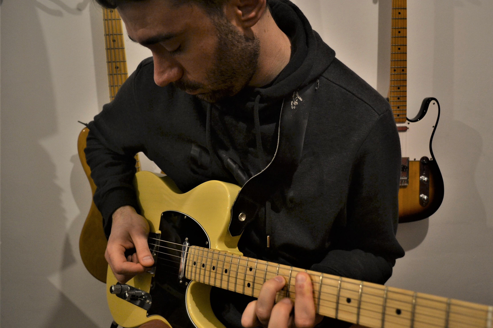
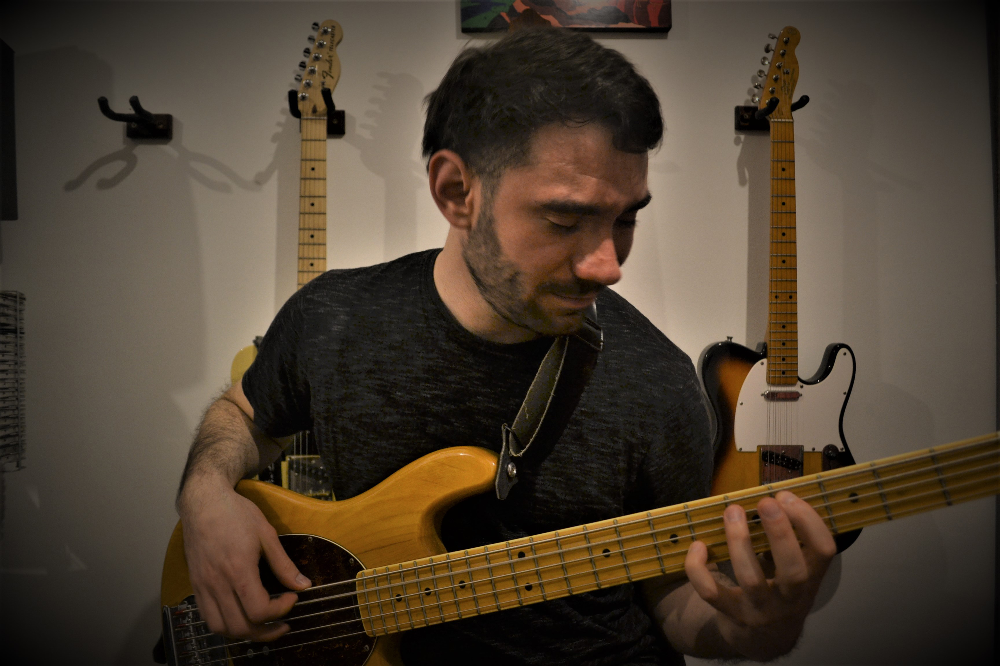
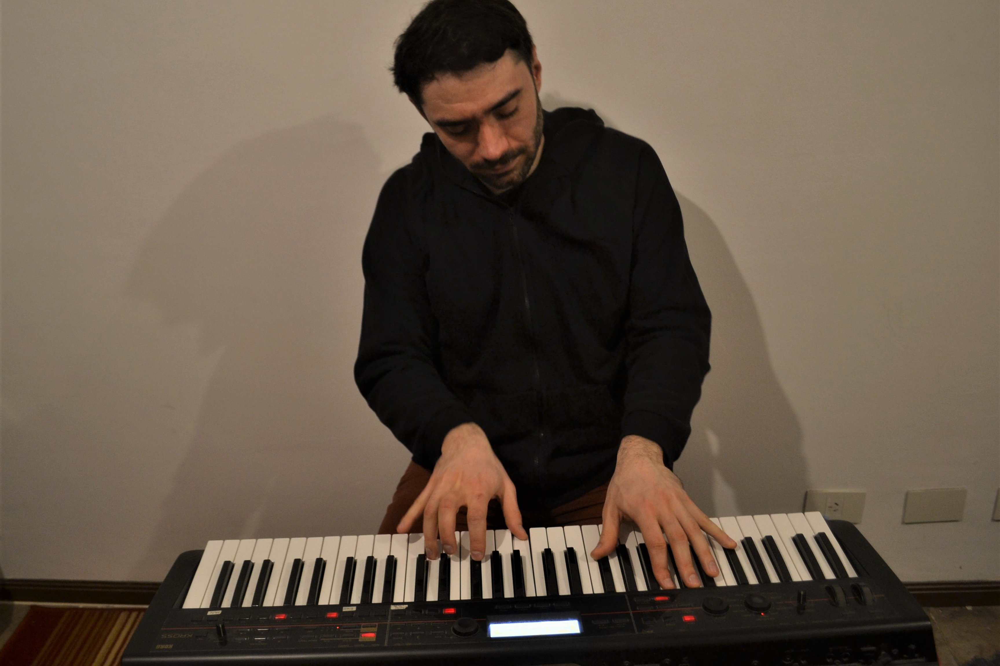

Diego López es un músico multi-instrumentista y compositor. Empezó en la música a los 14 años tocando la guitarra, luego el piano y a los 19 años comenzó su formación académica en el conservatorio en la especialidad de piano. 5 años después empezó la carrera de composición en simultáneo y luego de 3 años de hacer las dos carreras dejó la carrera de piano y comenzó a estudiar fagot siguendo con composición. Con el fagot entró a la Orquesta Estudiantil de Buenos Aires y a la Orquesta Municipial de José C. Paz. Además de estas orquestas a las cuales entro por audición él toca en la orquesta del Conservatorio de la Ciuidad (el Astor Piazzolla). Como compositor tiene compuestas una sonata para piano, un tema con variaciones de un tema de Shubert, un cuarteto de cuerdas, un sexteto de cámara y una sinfonía. Actualtmente se encuentra componiendo una obra de cámara para 12 músicos. Como docente él dio clases de guitarra y de piano durante más de 10 años de manera particular, dándole clases tanto a adultos como a niños y adolecentes.